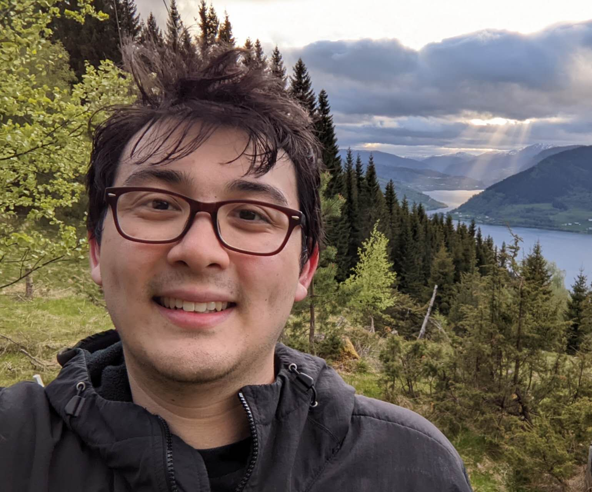

Daniel S. Mourad
About

My research interests are in computability theory, specifically computable combinatorics, reverse math, and Weihrauch analysis. I am currently a postdoc at Nanjing University.
Papers
- Daniel S. Mourad, Ranked Discontinuities of Multivalued Functions, preprint (submitted). arXiv
- Daniel S. Mourad, Computing Non-Repetitive Sequences with a Computable Lefthanded Local Lemma, preprint (submitted). arXiv
- Daniel S. Mourad, There is no composition in the [strong] computable reducibility degrees, Computability 14 (2025), no. 3–4, 172–177, doi: 10.1177/22113568251314744.
Selected Talks
- Escaping Continuity Within Alpha Many Steps, NUS Logic Seminar, Nov 12, 2025. (invited)
- Multiple Applications of Fully First Order Problems, Chinese Annual Conference on Mathematical Logic, Peking University, Oct 26, 2024. (invited)
- Computing Squarefree List Sequences Using the Lovász Local Lemma, Delta 20, Nanjing Xiaozhuang University, May 18, 2024. (invited)
- Indices, Computable Discontinuities, and The Recursion Theorem, Dagstuhl Seminar 25131 “Weihrauch Complexity: Structuring the Realm of Non-Computability”, Mar 27, 2025.
- Computing Non-Repetitive Sequences Using the Lovász Local Lemma, Joint Mathematics Meetings (JMM), Boston, MA — Winter 2023.
- Computing Non-Repetitive Sequences Using the Lovász Local Lemma, Online Logic Seminar, Southern Illinois University — Spring 2023. (invited)
- Computing Non-Repetitive Sequences Using the Lovász Local Lemma, AMS New England Graduate Student Conference, Brown University — Spring 2023. (invited)
- Computing Non-Repetitive Sequences Using the Lovász Local Lemma, AMS 2023 Spring Southeastern Sectional Meeting, Special Session on Logic, Combinatorics, and their, Georgia Tech University — Spring 2023. (invited)
- Computing Non-Repetitive Sequences Using the Lovász Local Lemma, Southeastern Logic Symposium, University of Florida — Spring 2023. (invited)
- Cohesive Powers of Decomposable Structures, Connecticut Logic Seminar, University of Connecticut, Storrs — Fall 2022.
- Quantifying Degrees of Relative Solvability: When Does One Problem Reduce to Another?, Sigma Seminar, University of Connecticut, Storrs — Spring 2022.
- Computing Non-Repetitive Sequences Using the Lovász Local Lemma, North Eastern Recursion and Definability Seminar (NERDS), University of Connecticut, Storrs — Spring 2022.
- A Proof of Convergence for Stochastic Gradient Descent on Convex Cost Functions (presenting work by M. Fazylab, F. Gama, and S. Paternain), Research Interaction Team (RIT) on Deep Learning, University of Maryland, College Park — Fall 2017.
Contact
dmourad@nju.edu.cn